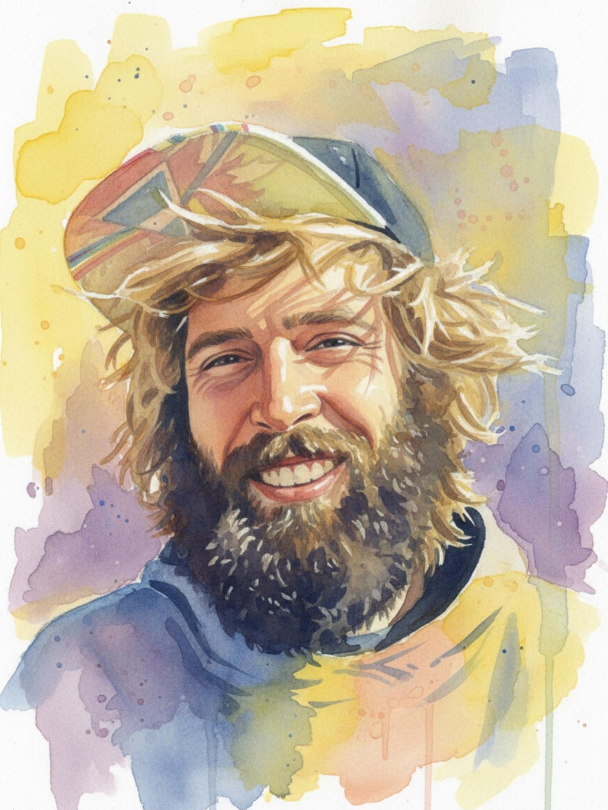

A gifted musician
John was a talented pianist and drummer with the rare ability to play almost any song by ear and compose original music.
A beloved son, brother, musician, and friend whose joyful spirit, compassionate heart, unwavering faith, and extraordinary musical gift will be remembered always.

Everyone who met him loved him.
John WebbJohn had an infectious smile, an engaging personality, and a genuine kindness that left a lasting impression on everyone who knew him.
John was a talented pianist and drummer with the rare ability to play almost any song by ear and compose original music.
He could devote hours of focused attention to projects that captured his interest, bringing imagination and care to what he made.
Despite his vibrant personality, John had a gentle spirit and always looked for ways to help others.
He was fiercely loyal to those he loved and was, in turn, deeply loved by his many friends and family.
Published by the Marietta Daily Journal on July 2, 2026.
Our beloved son John Fitzrobert Webb, 38, of Marietta, Georgia, passed away unexpectedly on June 24, 2026, in downtown Atlanta.
Born in 1987, John was a lifelong resident of Marietta. He attended The Walker School and Marietta High School before completing his education at Shelterwood in Colorado.
John loved sports and excelled as a baseball and soccer player. He was also an avid skateboarder and snowboarder during his younger years. Blessed with an exceptionally creative mind, John could devote hours of focused attention to projects that captured his interest.
Above all, John will be remembered as a gifted musician. A talented pianist and drummer, he possessed the rare ability to play almost any song by ear and to compose original music. Music was one of his greatest passions and brought joy not only to him but also to everyone who had the privilege of hearing him play.
John's infectious smile, engaging personality, and genuine kindness left a lasting impression on all who knew him. Despite his vibrant personality, he had a gentle spirit and a servant's heart, always looking for ways to help others. His unwavering faith in Jesus Christ shaped the way he lived, inspiring a deep love for family, friends, and everyone he encountered. He was fiercely loyal to those he loved and was, in turn, deeply loved by his many friends and family. Everyone who met him loved him.
Wednesday, July 8, 2026 • 11:00 a.m.
Stonebridge Church
675 Tower Road
Marietta, GA 30060
Memorial contributions may be made to:
The Extension
1507 Church Street Ext.
Marietta, GA 30060
(770) 590-9075
His parents, Robert and Sue Webb; his brother, Drew Webb; his aunt, Wendy Stroud and her husband, Shawn; his cousins, Dylan and Tyler, and Tyler's wife, Kayla; and many other cherished relatives and friends.